Home / Slides
Session slides
All 54 slides from the session. Use the arrow keys or buttons to move through them, or jump to any slide below.
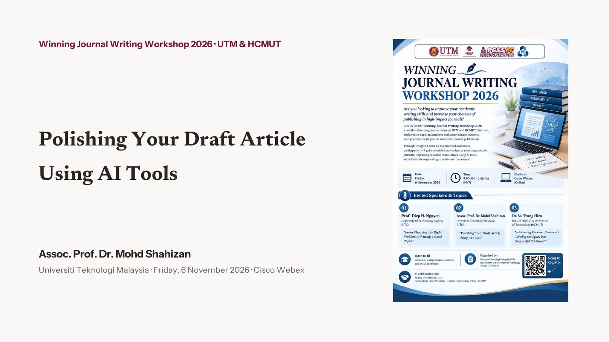
All slides
Opening
01 · The rules
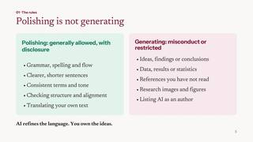
5 Polishing is not generating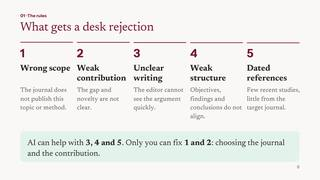
6 What gets a desk rejection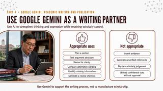
7 Use Google Gemini as a writing partner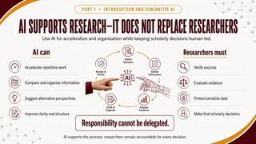
8 AI supports research, it does not replace researchers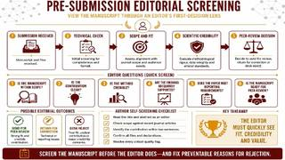
9 Pre-submission editorial screening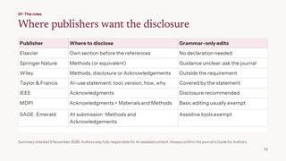
10 Where publishers want the disclosure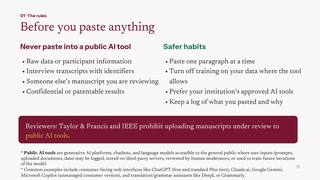
11 Before you paste anything- 12 Secure AI tools for UTM staff
- 13 Challenges, ethics and risks of generative AI use
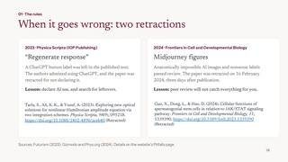
14 When it goes wrong: two retractions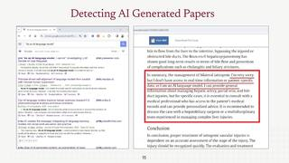
15 Detecting AI-generated papers (1)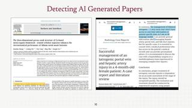
16 Detecting AI-generated papers (2)
02 · The toolkit
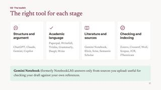
17 The right tool for each stage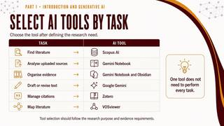
18 Select AI tools by task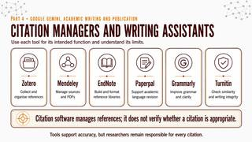
19 Citation managers and writing assistants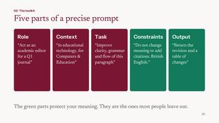
20 Five parts of a precise prompt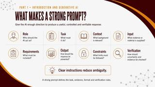
21 What makes a strong prompt?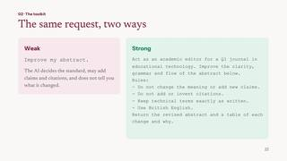
22 The same request, two ways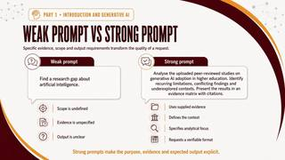
23 Weak prompt vs strong prompt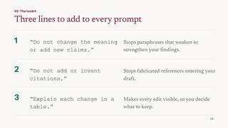
24 Three lines to add to every prompt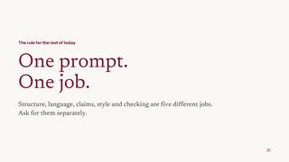
25 One prompt. One job.
03 · One abstract, five rounds
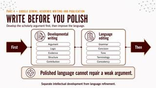
26 Write before you polish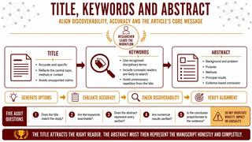
27 Title, keywords and abstract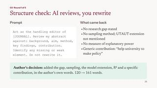
28 Round 1: Structure check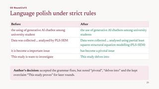
29 Round 2: Language polish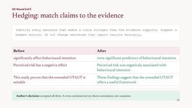
30 Round 3: Hedging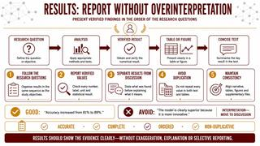
31 Results: report without overinterpretation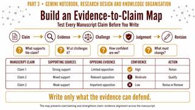
32 Build an evidence-to-claim map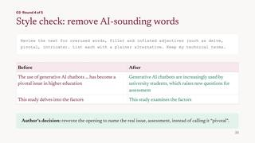
33 Round 4: Style check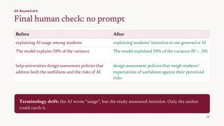
34 Round 5: Final human check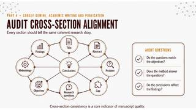
35 Audit cross-section alignment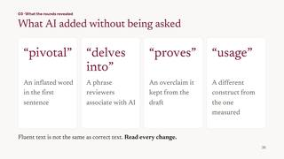
36 What AI added without being asked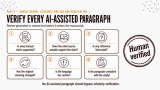
37 Verify every AI-assisted paragraph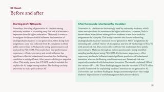
38 Before and after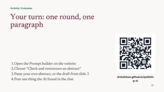
39 Your turn: one round, one paragraph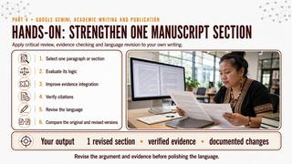
40 Hands-on: strengthen one manuscript section